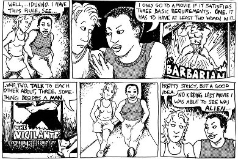

Evolution
Follow the feminism history, see what's happening in film industry simultaneously
-
1908-1935
Suffrage Movement, 19th Amendment
Women in US asked for suffrage. While film industry was just born. First narrative film was made shortly before, whose story was about a man who did robbery on train.
-

1935-1945
World War II
War made female situation even worse. Same happened in film industry. Less opportunity, less job and less representation.

1945-1990
Civil Rights and Equal Pay
Feminism movements for various female rights arose in the world, such as civil rights and equal pay. However, progress in movie industry was rather slow. Technological development seemed to be the focus. First color 3D film was born.

1990-now
New Women, Me Too and More
Film industry was booming. With more and more feminism movements, female representation in film was largely improved. It's glad to see 'mee too' movement in movie industry. But it's still not sufficient.
It is
still
going on!
More
Bechtel Test
 The Bechdel Test, or Bechdel-Wallace Test, sometimes called the Mo Movie Measure or Bechdel Rule is a simple test which names the following three criteria: (1) It has to have at least two women in it. (2) They talk to each other. (3) They talk about something besides a man. The test was popularized by Alison Bechdel's comic published in 1985 Dykes to Watch Out For
The Bechdel test has become a commonly used tool for evaluating the representation of women in media. It's used as a comparison with CMU movie data analysis.One thing to keep in mind is that the dataset can be biased, since people need to know about the test first so that they can report if on movie pass the test. It means these reporters were already aware the gender inequlaity in the movie industry so they might be biased on the choice of movies.
PLACES FOR PLOTS -6 bechlet_test.html
Team
@Yinghui Jiang
@Yichen Wang
@Sophia Rui-Xue Ly
@David Rochinha Chaves
Sources
1. CMU Movie Summary Corpus: http://www.cs.cmu.edu/~ark/personas/ contains character metadata, plot summaries and character tropes. 2. IMDB website: https://www.imdb.com/interfaces/ contains relevant infomation about movies, writers and directors etc. 3. Movie Bechdel Test Scores: https://www.kaggle.com/datasets/alisonyao/movie-bechdel-test-scores contains information of IMDb movie id and whether it passes the Bechdel Test or not. It's used as an indicator for the active presence of women in the movie industry. 4. Index of Names: https://www.cs.cmu.edu/Groups/AI/areas/nlp/corpora/names/ to identify writers' and directors' gender from names.